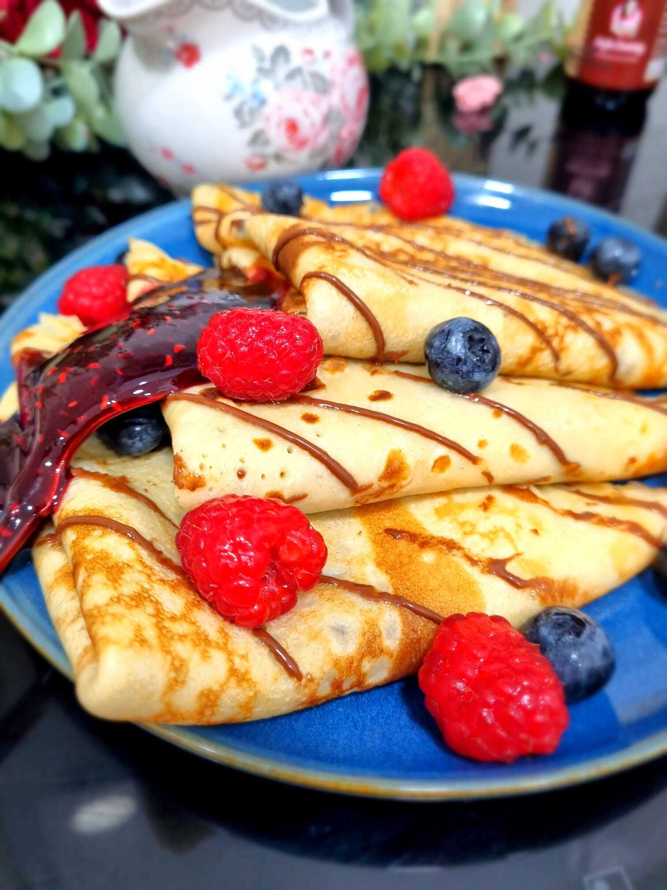

Clatite
Apasa aici pentru a te intoarce la meniul acasa.

Clatite pufoase, fragede si elastice, perfecte pentru umpluturi cu gem, miere, crema de ciocolata sau zahar vanilat, sunt unul dintre cele mai iubite deserturi de casa.
Pentru a prepara Clatitele aveti nevoie de urmatoarele ingrediente:
Ingrediente
- 250 ml lapte
- 2 oua
- 150 g faina
- 1 lingura zahar
- 1 praf de sare
- 1 lingura ulei
- esenta de vanilie
- zmeura/banane/afine/nutella
Mod de preparare:
- Intr-un bol mare, bate ouale cu un tel sau un mixer pana devin omogene. Adauga laptele si esenta de vanilie (daca folosesti) si amesteca bine.
- Intr-un alt bol, amesteca faina, zaharul (daca folosesti) si praful de sare. Adauga treptat amestecul uscat in cel umed, amestecand continuu pentru a evita formarea cocoloaselor.
- Adauga lingura de ulei in aluat si amesteca bine pana cand aluatul este omogen si fara cocoloase. Daca aluatul este prea gros, poti adauga putin lapte pentru a-l subtia.
- Incalzeste o tigaie antiaderenta pe foc mediu si unge-o cu putin ulei. Toarna un polonic mic de aluat in tigaie si roteste tigaia pentru a distribui uniform aluatul.
- Lasa clatita sa se prajeasca pana cand marginile devin aurii si suprafata superioara incepe sa faca bule.
- Intoarce clatita si mai las-o cateva secunde pana cand devine aurie si pe cealalta parte.
- Serveste clatitele cu topping-urile preferate: gem, ciocolata, fructe, miere, smantana, etc.
Pofta mare!